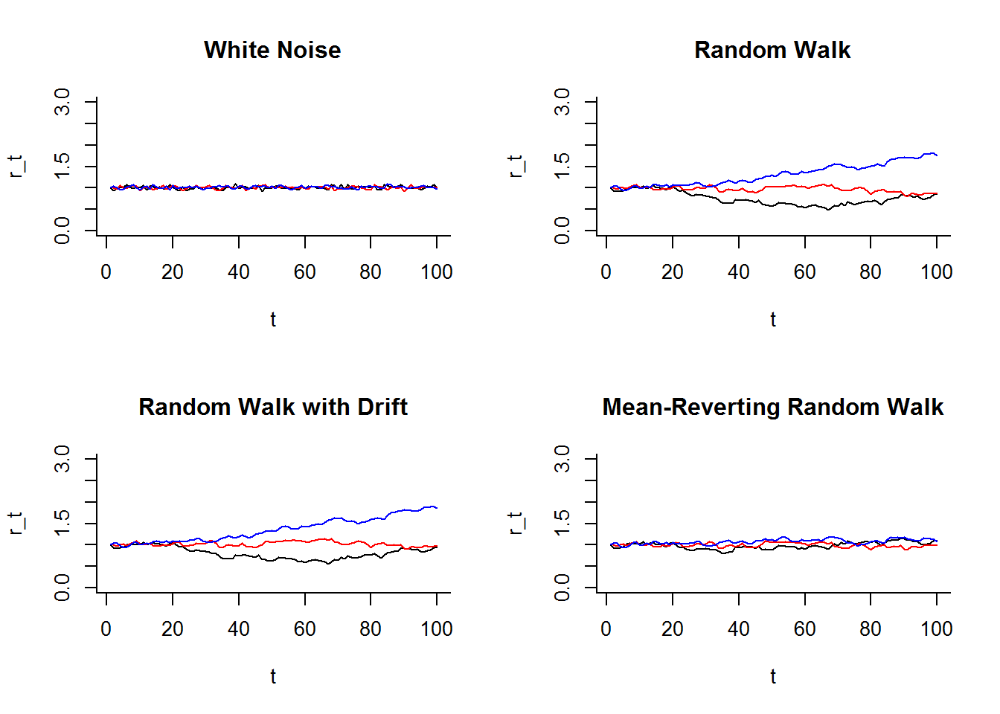

<!DOCTYPE html>
<html >

<head>

  <meta charset="UTF-8">
  <meta http-equiv="X-UA-Compatible" content="IE=edge">
  <title>MARSS wiki</title>
  <meta name="description" content="This is a wiki for MARSS.">
  <meta name="generator" content="bookdown 0.7 and GitBook 2.6.7">

  <meta property="og:title" content="MARSS wiki" />
  <meta property="og:type" content="book" />
  
  
  <meta property="og:description" content="This is a wiki for MARSS." />
  <meta name="github-repo" content="nwfsc-timeseries/MARSS-wiki" />

  <meta name="twitter:card" content="summary" />
  <meta name="twitter:title" content="MARSS wiki" />
  
  <meta name="twitter:description" content="This is a wiki for MARSS." />
  


  <meta name="viewport" content="width=device-width, initial-scale=1">
  <meta name="apple-mobile-web-app-capable" content="yes">
  <meta name="apple-mobile-web-app-status-bar-style" content="black">
  
  
<link rel="prev" href="plot-states-from-a-dfa-using-ggplot.html">

<script src="libs/jquery-2.2.3/jquery.min.js"></script>
<link href="libs/gitbook-2.6.7/css/style.css" rel="stylesheet" />
<link href="libs/gitbook-2.6.7/css/plugin-bookdown.css" rel="stylesheet" />
<link href="libs/gitbook-2.6.7/css/plugin-highlight.css" rel="stylesheet" />
<link href="libs/gitbook-2.6.7/css/plugin-search.css" rel="stylesheet" />
<link href="libs/gitbook-2.6.7/css/plugin-fontsettings.css" rel="stylesheet" />


<style type="text/css">
div.sourceCode { overflow-x: auto; }
table.sourceCode, tr.sourceCode, td.lineNumbers, td.sourceCode {
  margin: 0; padding: 0; vertical-align: baseline; border: none; }
table.sourceCode { width: 100%; line-height: 100%; }
td.lineNumbers { text-align: right; padding-right: 4px; padding-left: 4px; color: #aaaaaa; border-right: 1px solid #aaaaaa; }
td.sourceCode { padding-left: 5px; }
code > span.kw { color: #007020; font-weight: bold; } /* Keyword */
code > span.dt { color: #902000; } /* DataType */
code > span.dv { color: #40a070; } /* DecVal */
code > span.bn { color: #40a070; } /* BaseN */
code > span.fl { color: #40a070; } /* Float */
code > span.ch { color: #4070a0; } /* Char */
code > span.st { color: #4070a0; } /* String */
code > span.co { color: #60a0b0; font-style: italic; } /* Comment */
code > span.ot { color: #007020; } /* Other */
code > span.al { color: #ff0000; font-weight: bold; } /* Alert */
code > span.fu { color: #06287e; } /* Function */
code > span.er { color: #ff0000; font-weight: bold; } /* Error */
code > span.wa { color: #60a0b0; font-weight: bold; font-style: italic; } /* Warning */
code > span.cn { color: #880000; } /* Constant */
code > span.sc { color: #4070a0; } /* SpecialChar */
code > span.vs { color: #4070a0; } /* VerbatimString */
code > span.ss { color: #bb6688; } /* SpecialString */
code > span.im { } /* Import */
code > span.va { color: #19177c; } /* Variable */
code > span.cf { color: #007020; font-weight: bold; } /* ControlFlow */
code > span.op { color: #666666; } /* Operator */
code > span.bu { } /* BuiltIn */
code > span.ex { } /* Extension */
code > span.pp { color: #bc7a00; } /* Preprocessor */
code > span.at { color: #7d9029; } /* Attribute */
code > span.do { color: #ba2121; font-style: italic; } /* Documentation */
code > span.an { color: #60a0b0; font-weight: bold; font-style: italic; } /* Annotation */
code > span.cv { color: #60a0b0; font-weight: bold; font-style: italic; } /* CommentVar */
code > span.in { color: #60a0b0; font-weight: bold; font-style: italic; } /* Information */
</style>

<link rel="stylesheet" href="style.css" type="text/css" />
</head>

<body>


  <div class="book without-animation with-summary font-size-2 font-family-1" data-basepath=".">

    <div class="book-summary">
      <nav role="navigation">

<ul class="summary">
<li><a href="./">A Wiki for Example Rmds for MARSS</a></li>

<li class="divider"></li>
<li class="chapter" data-level="1" data-path="index.html"><a href="index.html"><i class="fa fa-check"></i><b>1</b> ReadMe</a><ul>
<li class="chapter" data-level="1.1" data-path="index.html"><a href="index.html#contribute"><i class="fa fa-check"></i><b>1.1</b> Contribute</a></li>
<li class="chapter" data-level="1.2" data-path="index.html"><a href="index.html#downloading-the-rmds"><i class="fa fa-check"></i><b>1.2</b> Downloading the Rmds</a></li>
</ul></li>
<li class="chapter" data-level="2" data-path="math-and-eqn-numbering.html"><a href="math-and-eqn-numbering.html"><i class="fa fa-check"></i><b>2</b> Math and Eqn numbering</a></li>
<li class="chapter" data-level="3" data-path="plot-states-from-a-marss-fit.html"><a href="plot-states-from-a-marss-fit.html"><i class="fa fa-check"></i><b>3</b> Plot states from a MARSS fit</a></li>
<li class="chapter" data-level="4" data-path="plot-states-from-a-dfa-using-ggplot.html"><a href="plot-states-from-a-dfa-using-ggplot.html"><i class="fa fa-check"></i><b>4</b> Plot states from a DFA using ggplot</a></li>
<li class="chapter" data-level="5" data-path="time-varying-population-growth-rates-univariate.html"><a href="time-varying-population-growth-rates-univariate.html"><i class="fa fa-check"></i><b>5</b> Time-varying population growth rates: univariate</a><ul>
<li class="chapter" data-level="5.1" data-path="time-varying-population-growth-rates-univariate.html"><a href="time-varying-population-growth-rates-univariate.html#univariate-model"><i class="fa fa-check"></i><b>5.1</b> Univariate model</a></li>
</ul></li>
<li class="divider"></li>
<li><a href="https://bookdown.org/yihui/bookdown/" target="blank">Published with bookdown</a></li>

</ul>

      </nav>
    </div>

    <div class="book-body">
      <div class="body-inner">
        <div class="book-header" role="navigation">
          <h1>
            <i class="fa fa-circle-o-notch fa-spin"></i><a href="./">MARSS wiki</a>
          </h1>
        </div>

        <div class="page-wrapper" tabindex="-1" role="main">
          <div class="page-inner">

            <section class="normal" id="section-">
<script type="text/javascript" src="https://cdn.mathjax.org/mathjax/latest/MathJax.js?config=TeX-AMS-MML_HTMLorMML">
</script>
<script type="text/x-mathjax-config"> 
  MathJax.Hub.Config({ 
    TeX: { 
      equationNumbers: {autoNumber: "all"},
      Macros: {
        AA: "{\\bf A}",
        BB: "{\\bf B}",
        aa: "{\\mathbf{a}}",
        bb: "{\\mathbf{b}}",
        CC: "{\\mathbf{C}}",
        cc: "{\\mathbf{c}}",
        DD: "{\\mathbf{D}}",
        dd: "{\\mathbf{d}}",
        EE: "{\\mathbf{E}}",
        ee: "{\\mathbf{e}}",
        FF: "{\\mathbf{F}}",
        ff: "{\\mathbf{f}}",
        GG: "{\\mathbf{G}}",
        gg: "{\\mathbf{g}}",
        HH: "{\\mathbf{H}}",
        II: "{\\mathbf{I}}",
        LL: "{\\mathbf{L}}",
        MM: "{\\mathbf{M}}",
        mm: "{\\mathbf{m}}",
        NN: "{\\mathbf{N}}",
        nn: "{\\mathbf{n}}",
        OO: "{\\mathbf{O}}",
        PP: "{\\mathbf{P}}",
        pp: "{\\mathbf{p}}",
        QQ: "{\\mathbf{Q}}",
        qq: "{\\mathbf{q}}",
        RR: "{\\mathbf{R}}",
        rr: "{\\mathbf{r}}",
        UU: "{\\mathbf{U}}",
        uu: "{\\mathbf{u}}",
        VV: "{\\mathbf{V}}",
        vv: "{\\mathbf{v}}",
        WW: "{\\mathbf{W}}",
        ww: "{\\mathbf{w}}",
        XX: "{\\mathbf{X}}",
        xx: "{\\mathbf{x}}",
        YY: "{\\mathbf{Y}}",
        yy: "{\\mathbf{y}}",
        ZZ: "{\\mathbf{Z}}",
        zz: "{\\mathbf{z}}",
        epiepi: "{\\boldsymbol{\\epsilon}}",
        pipi: "{\\boldsymbol{\\pi}}",
        mumu: "{\\boldsymbol{\\mu}}",
        uupsilon: "{\\pmb{\\upsilon}}",
        llambda: "{\\pmb{\\lambda}}",
        bbeta: "{\\pmb{\\beta}}",
        aalpha: "{\\pmb{\\alpha}}",
        zzeta: "{\\pmb{\\zeta}}",
        ttheta: "{\\pmb{\\theta}}",
        ttheta: "{\\pmb{\\theta}}",
        etaeta: "{\\boldsymbol{\\eta}}",
        xixi: "{\\boldsymbol{\\xi}}",
        PI: "{\\boldsymbol{\\Pi}}",
        LAM: "{\\boldsymbol{\\Lambda}}",
        GAM: "{\\boldsymbol{\\Gamma}}",
        SI: "{\\boldsymbol{\\Sigma}}",
        TH: "{\\boldsymbol{\\Theta}}",
        PH: "{\\boldsymbol{\\Phi}}",
        zer: "{\\mathbf{0}}",
        vec: "{\\,\\text{vec}}",
        exp: "{\\,\\text{exp}}",
        var: "{\\,\\text{var}}",
        diag: "{\\,\\text{diag}}",
        cov: "{\\,\\text{cov}}",
        MVN: "{\\,\\text{MVN}}",
        AIC: "{\\,\\text{AIC}}",
        E: "{\\,\\text{E}}",
        Lik: "{\\,\\text{L}}",
        N: "{\\,\\text{N}}"
      }
    } 
  });
</script>
<div id="time-varying-population-growth-rates-univariate" class="section level1">
<h1><span class="header-section-number">5</span> Time-varying population growth rates: univariate</h1>
<p>In this case study, we will use MARSS to fit a time-varying MAR model, that is a MAR model in which the parameters are time-varying. In the economics literature, such models are known as time-varying VAR models (TVAR). In this example, we use a time-varying MAR to model a stage-structured population with stage-specific survivals and fecundity that vary with time according to an auto-regressive process. We assume for this case study that the data do not have observation error; that is, that the observations are the true population size. The models in this chapter are a form of dynamic linear model (DLM), and the reader may want to review the chapter on DLMs in the User Guide.</p>
<div id="univariate-model" class="section level2">
<h2><span class="header-section-number">5.1</span> Univariate model</h2>
Before doing the multivariate case (time-varying MAR), we show a univariate case or the time-varying AR model using a simple population model with exponential growth. This model is typically written as follows:
<span class="math display">\[\begin{equation}
n_t = n_{t-1}(\lambda \times exp(w_t))
\label{tmar:se}\end{equation}\]</span>
<p>where <span class="math inline">\(w_t\)</span> are normal errors and <span class="math inline">\(\lambda\)</span> is the population growth rate. This is the vanilla stochastic exponential growth model and the lognormal errors (<span class="math inline">\(exp(w_t)\)</span>) mean that <span class="math inline">\(\lambda\)</span> make proportional changes (e.g. +/- 10% rather than +/- 0.1) and stays positive. Written in log-space, this is <span class="math inline">\(\log(n_t) = \log(n_{t-1}) + \log(\lambda) + w_t\)</span> where <span class="math inline">\(w_t \sim \N(0, \sigma^2)\)</span>.</p>
When we work with this model in log-space, we have a linear model with Gaussian errors. This is one reason we would normally log transform the data. However, we are working up to a multivariate version of this model, where we cannot convert to a linear model by a log transformation. Thus, we are not going to log-transform the data here. If we do not log transform our data (the <span class="math inline">\(n\)</span>), we could approximate Equation \ref{tmar:se} with the following model:
<span class="math display">\[\begin{equation}
\begin{gathered}
n_t = n_{t-1} \lambda_t \\
\lambda_t = \bar{\lambda} + w_t
\end{gathered}
\label{tmar:se2}
\end{equation}\]</span>
<p>where <span class="math inline">\(w_t\)</span> is <span class="math inline">\(\N(0, \approx \sigma^2)\)</span> if <span class="math inline">\(\sigma\)</span> is small. This is a terrible approximation if <span class="math inline">\(\sigma\)</span> is big but for many population models, survival and fecundity are varying no more than +/- 50% per year (or other relevant time step). In this case, approximating <span class="math inline">\(\bar{\lambda} \times exp(w_t))\)</span> with a normal distribution is not too terrible.</p>
The point of rewriting the stochastic exponential in this way is that we now can model <span class="math inline">\(\lambda_t\)</span> in other ways. <span class="math inline">\(\lambda_t=\bar{\lambda} + w_t\)</span> means that the mean population growth rate in year <span class="math inline">\(t\)</span> (<span class="math inline">\(\lambda_t\)</span>) just fluctuates around <span class="math inline">\(\bar{\lambda}\)</span> with no temporal correlation or trend up or down. We could model long-term (and potentially large) changes in the population growth rate by modeling <span class="math inline">\(\lambda_t\)</span> as a random walk, similar to the approach taken in dynamic linear modeling.
<span class="math display">\[\begin{equation}
\begin{gathered}
\lambda_t = \lambda_{t-1} + w_t, w_t \sim \N(0,q)
\end{gathered}
\label{tmar:unirw1}
\end{equation}\]</span>
Or we might model the <span class="math inline">\(\bar{\lambda}\)</span> as a random walk and allow the <span class="math inline">\(\lambda_t\)</span> to be a function of that. This is white noise with a random walk mean:
<span class="math display">\[\begin{equation}
\begin{gathered}
\bar{\lambda}_t = \bar{\lambda}_{t-1} + w_{1,t}, w_{1,t} \sim \N(0,q_1)\\
\lambda_t = \bar{\lambda}_t + w_{2,t}, w_{2,t} \sim \N(0,q_2)
\end{gathered}
\label{tmar:unirw2}
\end{equation}\]</span>
We could also model <span class="math inline">\(\lambda_t\)</span> as having a long-term trend (drift) upward or downward but allow it to wander at the same time. We can do this by adding a drift term <span class="math inline">\(u\)</span> to the <span class="math inline">\(\lambda_t\)</span> random walk model.
<span class="math display">\[\begin{equation}
\begin{gathered}
\lambda_t = \lambda_{t-1} + u + w_t, w_t \sim \N(0,q)\\
\lambda_0 = \bar{\lambda}
\end{gathered}
\label{tmar:unirwwd}\end{equation}\]</span>
We could model <span class="math inline">\(\lambda_t\)</span> as having a mean value but allow it to drift around that with correlation. We can do this using a mean-reverting random walk model:
<span class="math display">\[\begin{equation}
\begin{gathered}
\lambda_t = b \lambda_{t-1} + u + w_t, w_t \sim \N(0,q)\\
\bar{\lambda} = u/(1-b)
\end{gathered}
\label{tmar:unimrw}\end{equation}\]</span>
We could model <span class="math inline">\(\lambda_t\)</span> as having a mean value but year-to-year correlation by using a moving average of idependent errors. This is a common approach for introducing correlation into the errors in a time-series model.
<span class="math display">\[\begin{equation}
\begin{gathered}
\lambda_t = \bar{\lambda}+\begin{bmatrix}1&amp;\theta\end{bmatrix}\begin{bmatrix}w_t&amp;w_{t-1}\end{bmatrix}\\
w_t \sim N(0,q)
\end{gathered}
\label{tmar:sema}\end{equation}\]</span>
<div class="sourceCode"><pre class="sourceCode r"><code class="sourceCode r"><span class="kw">par</span>(<span class="dt">mfrow=</span><span class="kw">c</span>(<span class="dv">2</span>,<span class="dv">2</span>))
TT=<span class="dv">100</span>
barl=<span class="fl">1.01</span>
drift=.<span class="dv">001</span>
b=.<span class="dv">90</span>
s=<span class="kw">sqrt</span>(.<span class="dv">001</span>)
a=barl<span class="op">*</span>(<span class="dv">1</span><span class="op">-</span>b)
err=<span class="kw">c</span>(<span class="dv">0</span>,<span class="kw">rnorm</span>(TT<span class="op">-</span><span class="dv">1</span>,<span class="dv">0</span>,s))
err2=<span class="kw">c</span>(<span class="dv">0</span>,<span class="kw">rnorm</span>(TT<span class="op">-</span><span class="dv">1</span>,<span class="dv">0</span>,s))
err3=<span class="kw">c</span>(<span class="dv">0</span>,<span class="kw">rnorm</span>(TT<span class="op">-</span><span class="dv">1</span>,<span class="dv">0</span>,s))

<span class="co">#white noise around a mean lambda</span>
ylims=<span class="kw">c</span>(<span class="dv">0</span>,<span class="dv">3</span>)
<span class="kw">plot</span>(barl<span class="op">+</span>err,<span class="dt">type=</span><span class="st">&quot;l&quot;</span>,<span class="dt">ylim=</span>ylims,<span class="dt">bty=</span><span class="st">&quot;l&quot;</span>,<span class="dt">ylab=</span><span class="st">&quot;r_t&quot;</span>,<span class="dt">xlab=</span><span class="st">&quot;t&quot;</span>)
<span class="kw">title</span>(<span class="st">&quot;White Noise&quot;</span>)
<span class="kw">lines</span>(barl<span class="op">+</span>err2,<span class="dt">col=</span><span class="st">&quot;red&quot;</span>)
<span class="kw">lines</span>(barl<span class="op">+</span>err3,<span class="dt">col=</span><span class="st">&quot;blue&quot;</span>)

<span class="co">#random walk</span>
<span class="kw">plot</span>(barl<span class="op">+</span><span class="kw">cumsum</span>(err),<span class="dt">type=</span><span class="st">&quot;l&quot;</span>,<span class="dt">ylim=</span>ylims,<span class="dt">bty=</span><span class="st">&quot;l&quot;</span>,<span class="dt">ylab=</span><span class="st">&quot;r_t&quot;</span>,<span class="dt">xlab=</span><span class="st">&quot;t&quot;</span>)
<span class="kw">title</span>(<span class="st">&quot;Random Walk&quot;</span>)
<span class="kw">lines</span>(barl<span class="op">+</span><span class="kw">cumsum</span>(err2),<span class="dt">col=</span><span class="st">&quot;red&quot;</span>)
<span class="kw">lines</span>(barl<span class="op">+</span><span class="kw">cumsum</span>(err3),<span class="dt">col=</span><span class="st">&quot;blue&quot;</span>)

<span class="co">#white noise around a random walk mean lambda</span>
<span class="co">#plot(barl+cumsum(err)+err2,type=&quot;l&quot;,ylim=ylims,bty=&quot;l&quot;,ylab=&quot;r_t&quot;,xlab=&quot;t&quot;)</span>
<span class="co">#title(&quot;Random Walking Mean&quot;)</span>
<span class="co">#lines(barl+cumsum(err2)+err3,col=&quot;red&quot;)</span>
<span class="co">#lines(barl+cumsum(err3)+err,col=&quot;blue&quot;)</span>

<span class="co">#random walk with drift</span>
<span class="kw">plot</span>(barl<span class="op">+</span><span class="kw">cumsum</span>(err<span class="op">+</span>drift),<span class="dt">type=</span><span class="st">&quot;l&quot;</span>,<span class="dt">ylim=</span>ylims,<span class="dt">bty=</span><span class="st">&quot;l&quot;</span>,<span class="dt">ylab=</span><span class="st">&quot;r_t&quot;</span>,<span class="dt">xlab=</span><span class="st">&quot;t&quot;</span>)
<span class="kw">title</span>(<span class="st">&quot;Random Walk with Drift&quot;</span>)
<span class="kw">lines</span>(barl<span class="op">+</span><span class="kw">cumsum</span>(err2<span class="op">+</span>drift),<span class="dt">col=</span><span class="st">&quot;red&quot;</span>)
<span class="kw">lines</span>(barl<span class="op">+</span><span class="kw">cumsum</span>(err3<span class="op">+</span>drift),<span class="dt">col=</span><span class="st">&quot;blue&quot;</span>)

<span class="co">#mean reverting random walk</span>
n=barl
<span class="cf">for</span>(i <span class="cf">in</span> <span class="dv">2</span><span class="op">:</span>TT) n[i]=a<span class="op">+</span>b<span class="op">*</span>n[i<span class="op">-</span><span class="dv">1</span>]<span class="op">+</span>err[i]
<span class="kw">plot</span>(n,<span class="dt">type=</span><span class="st">&quot;l&quot;</span>,<span class="dt">ylim=</span>ylims,<span class="dt">bty=</span><span class="st">&quot;l&quot;</span>,<span class="dt">ylab=</span><span class="st">&quot;r_t&quot;</span>,<span class="dt">xlab=</span><span class="st">&quot;t&quot;</span>)
<span class="kw">title</span>(<span class="st">&quot;Mean-Reverting Random Walk&quot;</span>)
<span class="cf">for</span>(i <span class="cf">in</span> <span class="dv">2</span><span class="op">:</span>TT) n[i]=a<span class="op">+</span>b<span class="op">*</span>n[i<span class="op">-</span><span class="dv">1</span>]<span class="op">+</span>err2[i]
<span class="kw">lines</span>(n,<span class="dt">type=</span><span class="st">&quot;l&quot;</span>,<span class="dt">ylim=</span>ylims,<span class="dt">col=</span><span class="st">&quot;red&quot;</span>)
<span class="cf">for</span>(i <span class="cf">in</span> <span class="dv">2</span><span class="op">:</span>TT) n[i]=a<span class="op">+</span>b<span class="op">*</span>n[i<span class="op">-</span><span class="dv">1</span>]<span class="op">+</span>err3[i]
<span class="kw">lines</span>(n,<span class="dt">type=</span><span class="st">&quot;l&quot;</span>,<span class="dt">ylim=</span>ylims,<span class="dt">col=</span><span class="st">&quot;blue&quot;</span>)</code></pre></div>
<div class="figure">

<p class="caption">
(#fig:Cs01-tmar.rt)Examples of <span class="math inline">\(\lambda_t\)</span> trajectories for the four different <span class="math inline">\(\lambda_t\)</span> models. Each color of line uses the same input errors: randomly drawn from a Normal distribution with mean of 0 and standard deviation of 0.1. The drift term is 0.01. Mean-reversion (<span class="math inline">\(b\)</span>) is 0.9. <span class="math inline">\(ar(\lambda)\)</span> is 1.1.
</p>
</div>
<p>Let’s create some simulated data with mean population growth rate set at 1.01 (so an increasing population).</p>
<div class="sourceCode"><pre class="sourceCode r"><code class="sourceCode r"><span class="kw">set.seed</span>(<span class="dv">13</span>) <span class="co">#and interesting case</span>
TT=<span class="dv">100</span>
barl=<span class="fl">1.01</span>
drift=.<span class="dv">001</span> <span class="co">#drift</span>
n0 =<span class="st"> </span><span class="dv">100</span>
s=<span class="kw">sqrt</span>(.<span class="dv">001</span>)
err=<span class="kw">c</span>(<span class="dv">0</span>,<span class="kw">rnorm</span>(TT,<span class="dv">0</span>,s)) <span class="co">#process errors</span>

<span class="co">#white noise</span>
n.wn =<span class="st"> </span>n0
lambdat=barl<span class="op">+</span>err
<span class="cf">for</span>(i <span class="cf">in</span> <span class="dv">2</span><span class="op">:</span>TT) n.wn[i] =<span class="st"> </span>n.wn[i<span class="op">-</span><span class="dv">1</span>]<span class="op">*</span>lambdat[i]

<span class="co">#random walk</span>
n.rw =<span class="st"> </span>n0
lambdat=barl<span class="op">+</span><span class="kw">cumsum</span>(err)
<span class="cf">for</span>(i <span class="cf">in</span> <span class="dv">2</span><span class="op">:</span>TT) n.rw[i] =<span class="st"> </span>n.rw[i<span class="op">-</span><span class="dv">1</span>]<span class="op">*</span>lambdat[i]

<span class="co">#random walk with drift</span>
n.rwd =<span class="st"> </span>n0
lambdat=barl<span class="op">+</span><span class="kw">cumsum</span>(err<span class="op">+</span>drift)
<span class="cf">for</span>(i <span class="cf">in</span> <span class="dv">2</span><span class="op">:</span>TT) n.rwd[i] =<span class="st"> </span>n.rwd[i<span class="op">-</span><span class="dv">1</span>]<span class="op">*</span>lambdat[i]

<span class="co">#mean-reverting random walk</span>
b=.<span class="dv">90</span>
u=barl<span class="op">*</span>(<span class="dv">1</span><span class="op">-</span>b)
lambdat=barl
n.mrw =<span class="st"> </span>n0
<span class="cf">for</span>(i <span class="cf">in</span> <span class="dv">2</span><span class="op">:</span>TT){
lambdat[i]=u<span class="op">+</span>b<span class="op">*</span>lambdat[i<span class="op">-</span><span class="dv">1</span>]<span class="op">+</span>err[i]
n.mrw[i] =<span class="st"> </span>n.mrw[i<span class="op">-</span><span class="dv">1</span>]<span class="op">*</span>lambdat[i]
}</code></pre></div>
<div class="sourceCode"><pre class="sourceCode r"><code class="sourceCode r"><span class="kw">matplot</span>(<span class="kw">log</span>(<span class="kw">cbind</span>(n.wn,n.rw,n.rwd,n.mrw)),<span class="dt">type=</span><span class="st">&quot;l&quot;</span>,<span class="dt">ylab=</span><span class="st">&quot;t&quot;</span>,<span class="dt">xlab=</span><span class="st">&quot;N&quot;</span>,<span class="dt">col=</span><span class="kw">c</span>(<span class="st">&quot;black&quot;</span>,<span class="st">&quot;red&quot;</span>,<span class="st">&quot;blue&quot;</span>,<span class="st">&quot;green&quot;</span>))
<span class="kw">legend</span>(<span class="st">&quot;topright&quot;</span>, <span class="kw">c</span>(<span class="st">&quot;white noise&quot;</span>, <span class="st">&quot;random walk&quot;</span>, <span class="st">&quot;rw with drift&quot;</span>,<span class="st">&quot;mean-reverting rw&quot;</span>), <span class="dt">col=</span><span class="kw">c</span>(<span class="st">&quot;black&quot;</span>,<span class="st">&quot;red&quot;</span>,<span class="st">&quot;blue&quot;</span>,<span class="st">&quot;green&quot;</span>), <span class="dt">bty=</span><span class="st">&quot;l&quot;</span>, <span class="dt">lty=</span><span class="dv">1</span>)</code></pre></div>
<div class="figure"><span id="fig:Cs-03-tmarunirw"></span>

<p class="caption">
Figure 5.1: Simulated population counts with different <span class="math inline">\(\lambda_t\)</span> models.
</p>
</div>
Let’s fit these data using statistical model written in MARSS form. To do this, we need to write our model in matrix form:
<span class="math display">\[\begin{equation}
\begin{gathered}
\yy_t = \ZZ_t \xx_t + \aa_t + \vv_t, \vv_t \sim \MVN(0,\RR)\\
\xx_t = \BB_t \xx_{t-1} + \uu_t + \ww_t, \ww_t \sim \MVN(0,\QQ)
\end{gathered}\label{eqn:tmarss.uni}
\end{equation}\]</span>
<p>Before we do this translation, let’s think about what the <span class="math inline">\(n_t\)</span> are relative to our data which are observations not actually the true population size. We can treat our observations as error-free observations of <span class="math inline">\(n_t\)</span>, so <span class="math inline">\(o_t=n_t\)</span>, or we might think there is some error in our observations, so <span class="math inline">\(o_t=n_t+e_t\)</span>.</p>
Let’s start with treating our observations as perfect so <span class="math inline">\(o_t=n_t\)</span>. Our model takes the form
<span class="math display">\[\begin{equation}
\begin{gathered}
o_t = o_{t-1} s_t\\
\lambda_t = b \lambda_{t-1} + u + w_t, w_t \sim \N(0, q)
\end{gathered}\label{eqn:rw.no.err}
\end{equation}\]</span>
<p>Notice that all the process error is coming from <span class="math inline">\(\lambda_t\)</span>, which is fluctuating year to year. Comparing Equation \ref{eqn:rw.no.err} to \ref{eqn:tmarss.uni}, we see that <span class="math inline">\(\ZZ_t \equiv o_{t-1}\)</span>, <span class="math inline">\(\xx_t \equiv s_t\)</span>, <span class="math inline">\(\BB \equiv b\)</span>, and the other parameters, <span class="math inline">\(u\)</span>, <span class="math inline">\(c\)</span> and <span class="math inline">\(q\)</span>, have the same names. Remember that even though we are starting with a univariate case, the MARSS() function needs all parameters specified as matrices. Even scalars need to be specified as <span class="math inline">\(1 \times 1\)</span> matrices.</p>
Now we can set this up in R. Let’s start with the model where <span class="math inline">\(\lambda_t\)</span> is white noise, so simply fluctuating randomly about some mean temporally-constant population growth rate. Our <span class="math inline">\(\lambda_t\)</span> model reduces to
<span class="math display">\[\begin{equation}
\begin{gathered}
o_t = o_{t-1} \lambda_t\\
\lambda_t = \bar{\lambda} + w_t, w_t \sim \N(0, q)
\end{gathered}\label{eqn:rw.no.err}
\end{equation}\]</span>
<p>Notice that <span class="math inline">\(\lambda_0\)</span> does not appear in this model because <span class="math inline">\(t\)</span> starts at 1 (because the data start at <span class="math inline">\(t=1\)</span>). In R, this model is</p>
<div class="sourceCode"><pre class="sourceCode r"><code class="sourceCode r"><span class="co">#lambda_t is wn</span>
dat =<span class="st"> </span>n.wn
<span class="co">#Z is n at t-1 starting at t=1 up to t=TT-1</span>
Z=<span class="kw">array</span>(dat[<span class="dv">1</span><span class="op">:</span>(TT<span class="op">-</span><span class="dv">1</span>)],<span class="dt">dim=</span><span class="kw">c</span>(<span class="dv">1</span>,<span class="dv">1</span>,TT<span class="op">-</span><span class="dv">1</span>))
<span class="co">#no observation error and no a in the y equation</span>
R =<span class="st"> &quot;zero&quot;</span>; A=<span class="st">&quot;zero&quot;</span>

<span class="co">#state eqn. Specify B, W, and U</span>
<span class="co">#white noise</span>
<span class="co">#x_t = U + w_t</span>
<span class="co">#Q is univariate so diagonal and equal or unequal would be the same</span>
B=<span class="st">&quot;zero&quot;</span>; Q=<span class="st">&quot;unconstrained&quot;</span>
U=<span class="kw">matrix</span>(<span class="st">&quot;mean.lambda&quot;</span>)

<span class="co">#specify the initial states</span>
<span class="co">#because x0 does not appear in the model we can fix it at 0</span>
x0=<span class="kw">matrix</span>(<span class="dv">0</span>)
V0=<span class="st">&quot;zero&quot;</span></code></pre></div>
<p>Now we can fit the model. Notice that the first time-step of the data was used in <span class="math inline">\(\ZZ\)</span>, therefore we need to strip that first time step off the data we pass to the <code>MARSS()</code> function.</p>
<div class="sourceCode"><pre class="sourceCode r"><code class="sourceCode r"><span class="co">#univariate white noise model for lambda_t</span>
model.uwn=<span class="kw">list</span>(<span class="dt">Z=</span>Z, <span class="dt">R=</span>R, <span class="dt">A=</span>A, <span class="dt">B=</span>B, <span class="dt">Q=</span>Q, <span class="dt">U=</span>U, <span class="dt">x0=</span>x0, <span class="dt">V0=</span>V0)
tmp=<span class="kw">MARSS</span>(dat[<span class="dv">2</span><span class="op">:</span>TT], <span class="dt">model=</span>model.uwn)</code></pre></div>
<pre><code>## Success! abstol and log-log tests passed at 16 iterations.
## Alert: conv.test.slope.tol is 0.5.
## Test with smaller values (&lt;0.1) to ensure convergence.
## 
## MARSS fit is
## Estimation method: kem 
## Convergence test: conv.test.slope.tol = 0.5, abstol = 0.001
## Estimation converged in 16 iterations. 
## Log-likelihood: -294.8938 
## AIC: 593.7875   AICc: 593.9125   
##  
##               Estimate
## U.mean.lambda 1.007752
## Q.Q           0.000895
## Initial states (x0) defined at t=0
## 
## Standard errors have not been calculated. 
## Use MARSSparamCIs to compute CIs and bias estimates.</code></pre>

</div>
</div>
            </section>

          </div>
        </div>
      </div>
<a href="plot-states-from-a-dfa-using-ggplot.html" class="navigation navigation-prev navigation-unique" aria-label="Previous page"><i class="fa fa-angle-left"></i></a>

    </div>
  </div>
<script src="libs/gitbook-2.6.7/js/app.min.js"></script>
<script src="libs/gitbook-2.6.7/js/lunr.js"></script>
<script src="libs/gitbook-2.6.7/js/plugin-search.js"></script>
<script src="libs/gitbook-2.6.7/js/plugin-sharing.js"></script>
<script src="libs/gitbook-2.6.7/js/plugin-fontsettings.js"></script>
<script src="libs/gitbook-2.6.7/js/plugin-bookdown.js"></script>
<script src="libs/gitbook-2.6.7/js/jquery.highlight.js"></script>
<script>
gitbook.require(["gitbook"], function(gitbook) {
gitbook.start({
"sharing": {
"github": false,
"facebook": true,
"twitter": true,
"google": false,
"linkedin": false,
"weibo": false,
"instapper": false,
"vk": false,
"all": ["facebook", "google", "twitter", "linkedin", "weibo", "instapaper"]
},
"fontsettings": {
"theme": "white",
"family": "sans",
"size": 2
},
"edit": {
"link": "https://github.com/nwfsc-timeseries/MARSS-wiki/edit/master/rmdfiles/03-tvarss-univariate.Rmd",
"text": "Edit"
},
"download": null,
"toc": {
"collapse": "subsection"
}
});
});
</script>

<!-- dynamically load mathjax for compatibility with self-contained -->
<script>
  (function () {
    var script = document.createElement("script");
    script.type = "text/javascript";
    var src = "";
    if (src === "" || src === "true") src = "https://cdn.bootcss.com/mathjax/2.7.1/MathJax.js?config=TeX-MML-AM_CHTML";
    if (location.protocol !== "file:" && /^https?:/.test(src))
      src = src.replace(/^https?:/, '');
    script.src = src;
    document.getElementsByTagName("head")[0].appendChild(script);
  })();
</script>
</body>

</html>
